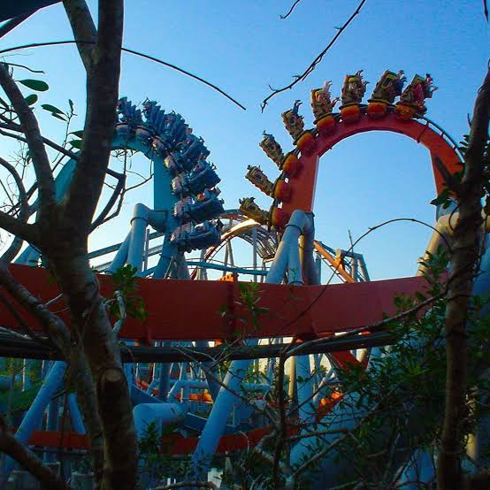

Dueling Dragons was a Dueling B&M Inverted Coaster. This One of a kind coaster opened in 1999 and closed in 2017 to make way for Hagrid's Magical Creatures Motorbike Adventure. Now despit the name, they were actully two coasters that were identical and the dueling part came from interacting elements including the famous double loop. These two were the Fire side and the Ice side both of them being colored Red and Blue for their respected names. This coaster has two eras, one being 1999-2010 and the other being 2010-2017. The difference being the name change because of the Harry Potter world opening, changing the name to Dragon Challenge and ride theme around Harry Potter while keeping the dragons theme.
